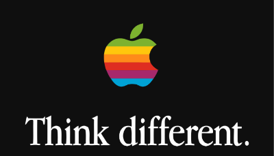
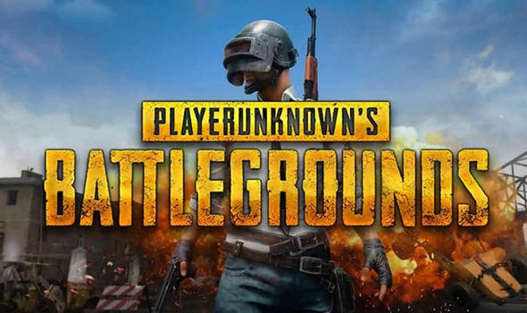

Apple anuncia quatro novos Animojis
Postado em 20/02/2018

Um dos destaques do iPhone X, os Animojis utilizam a tecnologia de reconhecimento facial da Apple para deixar você controlar emojis animados em seu smartphone. Agora, a companhia anunciou o lançamento de quatro novos elementos para aumentar as possibilidades de quem tem um iPhone X.
As novidades são um leão, um urso, um dragão e uma caveira e todas estarão disponíveis para os usuários finais a partir da versão 11.3 do iOS. Esta será a próxima grande atualização do sistema mobile da Maçã, que promete ainda um melhor gerenciamento da bateria e também novos recursos de realidade aumentada por meio do ARKit.
Postado por Felipe Okino
Apple quer trazer de volta o logo retrô da maçã colorida
Postado em 20/02/2018

Os mais novinhos não devem se lembrar, mas desde a estreia da Apple em 1976 até a retomada com Steve Jobs no final dos anos 1990, o grande símbolo da companhia, a maçã, apresentava faixas coloridas, com as cores do arco-íris. E, ao que parece, a Gigante de Cupertino quer trazer o logotipo retrô de volta, para explorar em seu merchandising.
De acordo com documentos flagrados pelo The Blast, a empresa registrou o pedido no escritório de patentes e marcas Trademark Reporting and Monitoring System, em dezembro do ano passado. A descrição prevê que o ícone retrô volte a ser utilizado para estampar chapéus, bonés, camisetas e outros itens, que devem ser comercializados e distribuídos como mimos para quem visitar a loja de artigos do novo quartel-general Apple Park.
Postado por Felipe Okino
Novidades - PUBG
Postado em 20/02/2018

Depois de anunciar que um terceiro mapa chegará a PlayerUnknown’s Battlegrounds, a Bluehole também anunciou algumas novidades que chegarão em breve. Uma delas é a aguardada limitação de ping por partida, ou seja, a taxa de conexão do jogador.
A ideia é restringir as partidas que jogadores com ping algo podem entrar, criando uma experiência mais balanceada. A proposta desse sistema não é impedir a entrada de jogadores com má conexão de internet ou que desejam jogar em servers de outros países em partidas, e sim balancear a lista de usuários.
Postado por Felipe Okino
Google aumenta recompensa
Postado em 20/02/2018
A Google aumentou consideravelmente as recompensas dadas para especialistas em TI que conseguirem identificar falhas de segurança no sistema operacional móvel da empresa, o Android.
Com a iniciativa, hackers que conseguem encontrar algum bug que permita a execução remota de código no sistema podem ser premiados com até US$ 5 mil em dinheiro (o prêmio anterior não passava de US$ 1 mil).
Além disso, vulnerabilidades que permitem a transferência de informações sensíveis sem criptografia, bem como falhas que abrem o acesso a contas protegidas de aplicações também entraram no escopo das premiações.
Postado por Felipe Okino
Age Of Empires
Postado em 20/02/2018
Um legado mais que respeitado é o de Age of Empires. Nesta terça-feira do dia 20 de fevereiro de 2018, a Microsoft realiza o lançamento do Age of Empires: Definitive Edition para PCs com Windows 10 em todo o mundo.
O jogo foi criado “como uma homenagem a todos os fãs de jogos de estratégia em tempo real”, de acordo com a empresa. A Definitive Edition traz de volta o Age of Empires original e a expansão Rise of Rome, com 16 civilizações para explorar e 10 campanhas para conquistar.
Postado por Felipe Okino